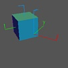

Transformations on an object can be performed in one of two different frames of reference: the coordinate system of the object itself, or the coordinate system of the object containing the transformed object.

Frames of Reference:This example shows the difference between these two methods. First a compound object is created called
cubethat is made up of a cube together with some axes. These axes mark the coordinate system of the cube. A second set of axes are loaded; these mark the coordinate system of the parent, which is theworldobject in Geomview.An initial configuration is set up using
Transformthat has the cube offset from the center of the world.Note the difference between rotating the cube in its own coordinate system and rotating it in the world coordinate system in the first two
Sequencecommands. The next two sequences show that you frequently can get the same effects by changing the centers of the transformations, done here by adding a second parameter to theXYcommand.The
cubeandxyz.vectfiles are standard ones that come with Geomview.
parent.smGeometry build cube {{< cube} {< xyz.vect}} Load xyz.vect Transform {Scale .75} Transform {Product {YZ -$pi/3} {XY -$pi/6}} Transform {Translate {0 1 0}} cube Pause 3 Sequence {XY $pi/2} 8 cube Pause 3 Sequence {XY $pi/2} 8 cube -parent Pause 3 Sequence {XY $pi/2 {-1 0 0}} 8 cube Pause 3 Sequence {XY $pi/2 {0 -1 0}} 8 cube -parent Pause 5
|
|